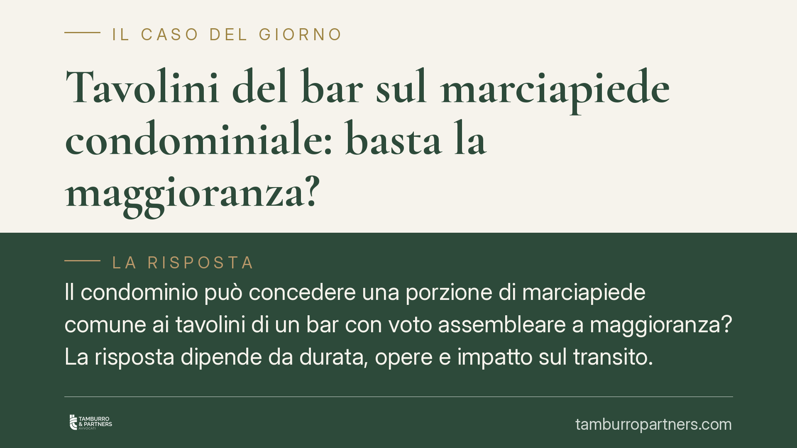

Tavolini del bar sul marciapiede condominiale: basta la maggioranza?
Il condominio può concedere una porzione di marciapiede comune ai tavolini di un bar con voto assembleare a maggioranza? La risposta dipende da durata, opere e impatto sul transito. Una recente pronuncia di legittimità aiuta a distinguere ciò che rientra nell'ordinaria amministrazione da ciò che, incidendo stabilmente sul bene comune, richiede regole più stringenti.

Il caso
Un'assemblea condominiale delibera, a maggioranza, di concedere per la stagione estiva una porzione di marciapiede comune al gestore di un bar, per la collocazione di tavolini. Una condomina dissenziente impugna la delibera, sostenendo che l'operazione altererebbe la destinazione della parte comune e richiederebbe quindi maggioranze più elevate o addirittura il consenso di tutti.
La questione tocca un punto ricorrente nella gestione condominiale: quando la concessione temporanea di uno spazio comune resta un atto di ordinaria amministrazione e quando, invece, sconfina in atti che eccedono i poteri della maggioranza semplice.
Inquadramento normativo
Tre norme del codice civile compongono l'impianto della materia.
L'art. 1102 c.c. disciplina l'uso della cosa comune da parte dei condòmini: ciascuno può servirsene, purché non ne alteri la destinazione e non impedisca agli altri pari uso. È il perimetro entro cui va letta ogni forma di godimento, anche quello concesso a terzi.
L'art. 1120 c.c. regola le innovazioni, cioè le modifiche che incidono in modo durevole sulla struttura o sulla destinazione del bene comune. Va corretto un equivoco frequente: le innovazioni ordinarie non richiedono l'unanimità, ma la maggioranza qualificata prevista dall'art. 1136, comma 5, c.c. (maggioranza degli intervenuti e almeno i due terzi del valore dell'edificio). L'unanimità, in senso proprio, rileva semmai per gli atti dispositivi del bene comune, come l'alienazione o la costituzione di diritti reali.
L'art. 1117-ter c.c. disciplina, con maggioranze rafforzate, la modifica della destinazione d'uso delle parti comuni. Anche qui il presupposto è un mutamento tendenzialmente stabile della funzione del bene.
Rilevante è poi il regime della locazione. La locazione di beni comuni ultranovennale rientra tra gli atti che eccedono l'ordinaria amministrazione (cfr. art. 1108 c.c. in tema di comunione e, per analogia applicativa, la disciplina generale della locazione ex artt. 1571 ss. c.c.). Una concessione breve e stagionale, con canone contenuto, si colloca invece su un piano diverso.
Perché la maggioranza ordinaria può bastare
La giurisprudenza di legittimità ha chiarito che la concessione temporanea e onerosa di una porzione di parte comune non costituisce, di per sé, né innovazione né mutamento di destinazione. Non modifica la struttura del bene, non ne altera stabilmente la funzione e produce un'utilità economica per il condominio.
A queste condizioni l'operazione può essere ricondotta all'ordinaria gestione economica del bene comune, assunta con le maggioranze ordinarie. La distinzione decisiva passa quindi per due variabili: la durata del rapporto e l'entità dell'impegno assunto. Una concessione stagionale e reversibile pesa diversamente da una locazione pluriennale che sottrae il bene al godimento comune.
Le condizioni poste dalla Corte
La legittimità della delibera a maggioranza è subordinata a tre requisiti, che devono ricorrere congiuntamente:
- Temporaneità dell'occupazione: la concessione deve essere limitata nel tempo (nel caso, stagionale) e reversibile.
- Non alterazione della struttura del bene: nessuna opera stabile o modifica permanente del marciapiede comune.
- Garanzia del transito: deve restare assicurato il passaggio, in modo da non compromettere il pari uso da parte degli altri condòmini e dei terzi.
Se anche uno solo di questi presupposti viene meno, l'inquadramento cambia e con esso il regime delle maggioranze.
Implicazioni pratiche
Per l'amministratore e per i condòmini il messaggio è duplice. Da un lato, la maggioranza dispone di uno spazio di manovra concreto per valorizzare economicamente le parti comuni. Dall'altro, ogni scostamento dai tre requisiti espone la delibera al rischio di impugnazione.
Va inoltre ribadito un punto spesso trascurato: il consenso condominiale non sostituisce le autorizzazioni amministrative. L'occupazione di suolo, quando il marciapiede è gravato da servitù di pubblico transito o rientra nel demanio comunale, richiede il titolo rilasciato dall'ente competente e il pagamento del relativo canone. Si tratta di un doppio binario: quello privatistico interno al condominio e quello pubblicistico verso il Comune.
La qualificazione dell'intervento va comunque valutata caso per caso, alla luce di durata, opere e impatto effettivo sul transito.
Cosa fare in concreto
- Formalizza i limiti nel verbale: indica espressamente durata, reversibilità e obbligo di garantire il passaggio, così da rendere trasparente il perimetro della delibera.
- Redigi un contratto scritto con il gestore, definendo canone, durata, divieto di opere stabili e responsabilità per danni.
- Verifica la natura del suolo: accerta se il marciapiede sia gravato da servitù di transito o rientri nel demanio comunale.
- Attiva il doppio binario amministrativo: richiedi al Comune il titolo per l'occupazione di suolo pubblico prima dell'installazione dei tavolini.
- Documenta lo stato dei luoghi prima e dopo la stagione, per prevenire contestazioni sul ripristino.
Disclaimer
Contributo informativo a cura di Tamburro & Partners - Avv. Giuseppe Tamburro. Non costituisce parere legale.
Ogni condominio ha una storia a sé.
Se gestisci un'amministrazione e vuoi un confronto su una specifica questione condominiale, scrivi allo studio. Ti rispondiamo entro un giorno lavorativo.